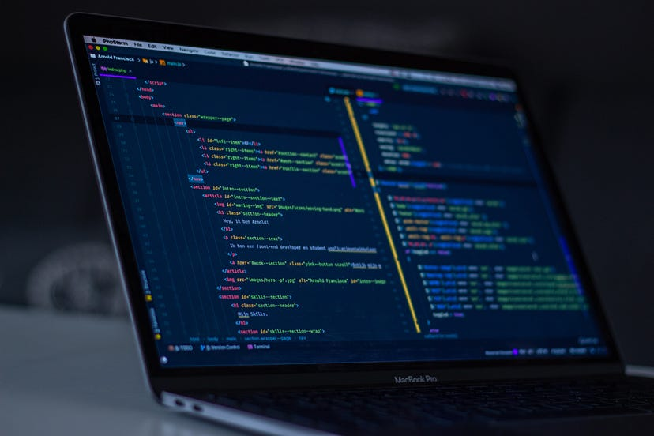

These resources helped me become a Full Stack Developer
A month ago, I told everyone about how I became a Full Stack Software Developer in about 7 months. That post reached out to so many people, so here's more!
Right now, I believe in project based learning (try building a project and learn things along the way because of it).
But before building a project, it is good to have a little bit of understanding about the concepts.
There are a lot of YouTube channels that can teach you web development. Honestly, stop experimenting every channel and just pick one!
Let's not beat around the bush now.
Here are some free and paid resources that helped me land the internship and later the full time position.
The complete 2023 Web Development Bootcamp (paid)
For the full stack web development, I bought the "The Complete 2023 Web Development Bootcamp" course by Angela Yu (in my time, it was the year 2022).
You can get it for about INR 449 on Udemy.I found this course to be well taught. Most of the web dev topics were included, along with some terminal/command line commands and tips on general things like how to study and how to keep moving forward with the topics.
Free resources
Now, my tech stack (the technologies that I work with excluding HTML, CSS and JavaScript) include:
- React
- Next.js
- Node.js
-
- een
- twee
- React Native
Therefore, some YouTube channels that I recommend to everyone are:
For frontend development
Web Dev Simplified
(Videos about HTML, CSS, JavaScript, React, etc.)
Pretty great YouTube channel to get started in web development.
Honestly,
one of the first channels that introduced me to the world of web dev.
Pretty great YouTube channel to get started in web development. Honestly, one of the first channels that introduced me to the world of web dev.